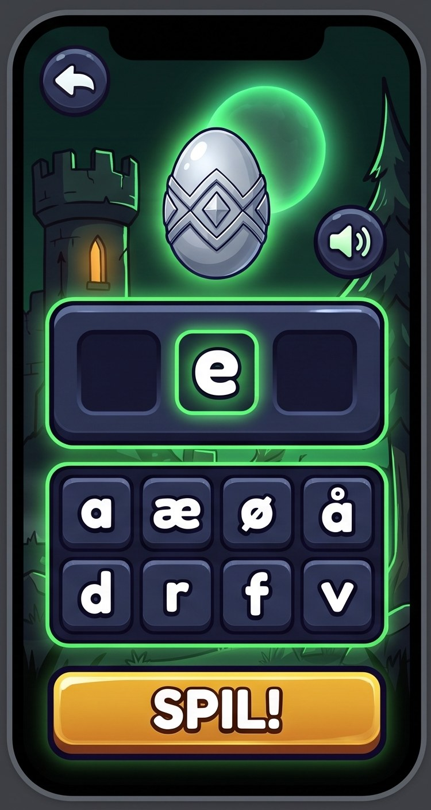
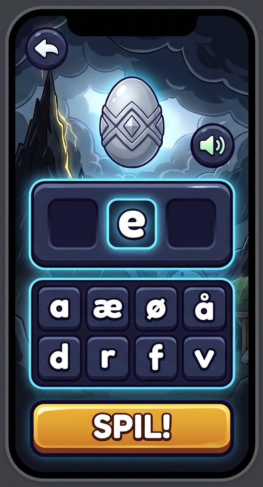
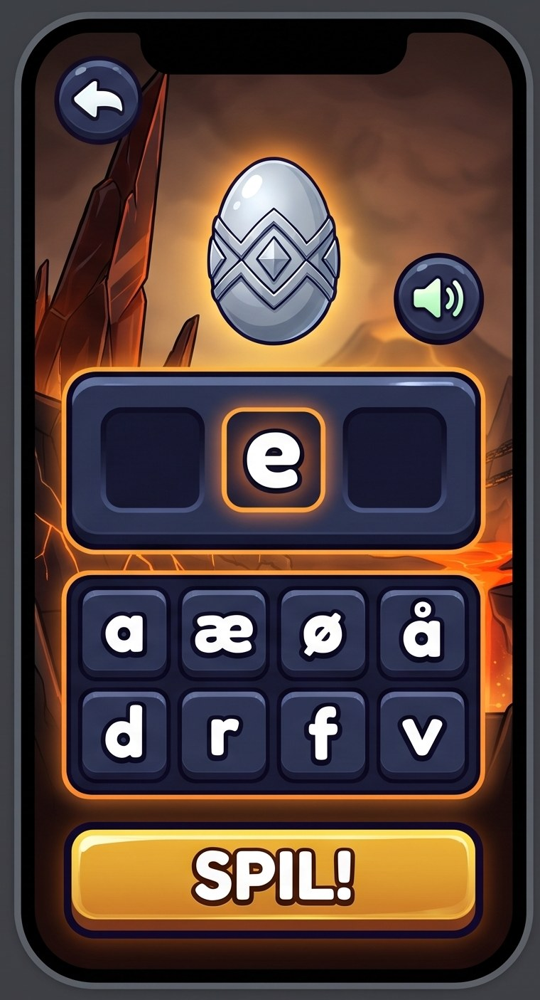
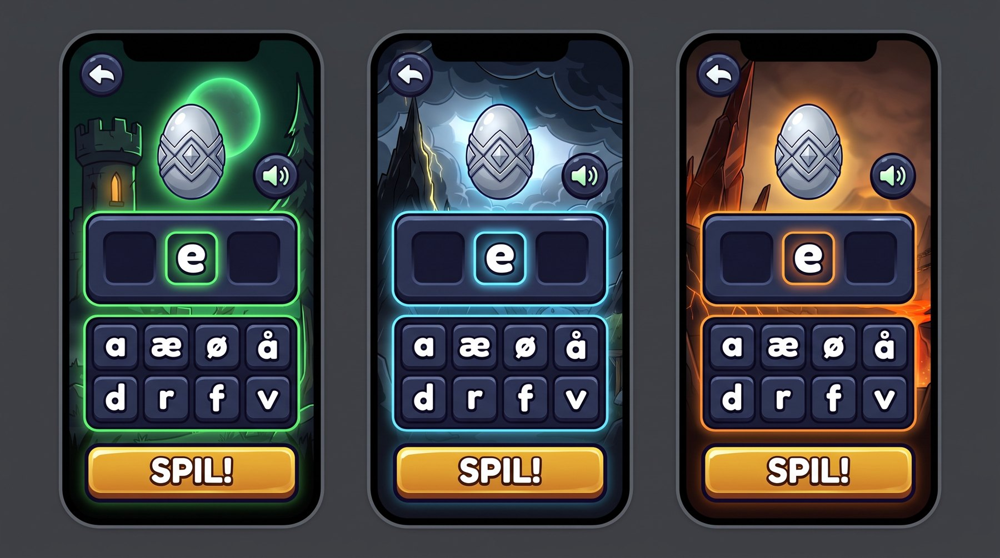

Knappernes udseende
8/11: spillets egen stil, gjort premium. Samme knapper i alle verdener; kun kantens glød og det fyldte felt skifter til verdenens farve. Det er retningen, der skal vælges, ikke detaljerne: en hurtig skitse fra Gemini (ca. 1 kr.), som males bagefter som et rigtigt sæt. Vis gerne Conrad de tre billeder og spørg, om han vil spille det.
4Den nuværende stil, gjort premium
De mørkeblå paneler og den lysende kant, du kender fra spillet, men som rigtige ting: tykke, mørke fliser med en mørk kant som væsnernes, en tyk underkant og lys foroven. Hvide bogstaver, der er lette at læse. Felterne er fordybede og lyser op i verdenens farve, når et bogstav lander. Guld kun på SPIL!.
Skyggeskov (grøn)

Lyntoppen (blå)

Ildgabet (orange)

Claudes ærlige blik: retningen sidder (ingen sten, intet slik, ingen runer, ægget uden væsen). Skitsen er lidt for mat; i det malede sæt skal fliserne være blankere, bogstaverne have en tykkere mørk kant, og det fyldte felt lyse mere indefra. Højttalerens grønne ikon bliver hvidt.

Valgt fra: de tre første bud
Din dom 8/11: bud 3 "virkelig pædagog agtig. Sådan helt vildt baby", bud 2 "passer slet ikke ind. Hel stilforvirring", bud 1 "interessant, men meget stort og meget en vis stenalder". Alle tre skiftede spillets stil ud i stedet for at løfte den.
1Sten og guld
Udhuggede stenklodser med guldkant og bogstaver i guld; felterne er fordybede fatninger i en stenramme; SPIL! er en tyk guldbarre. Varmt og eventyragtigt, passer til ruinerne i Skyggeskov.

2Krystal og magi
Blanke ædelsten med hvide bogstaver; felterne er lysende runecirkler; SPIL! er en glødende rav-ædelsten. Mest magisk. Obs: Gemini satte runer i felterne, og de ligner bogstaver; i spillet skal felterne være tomme.

3Legetøj-premium
Tykke, blanke klodser som slik med en tyk sort kant og fede hvide bogstaver, som LEVEL UP-logoet og Brawl Stars; felterne er dybe, runde fordybninger; SPIL! er en fed gul pille. Lettest at læse. I spillet får klodserne én farve, for farverne blå, lilla og guld betyder sjældenhed.

Sådan ser det ud nu
Fra spillet, som telefonen kører det: startsiden, runden med klodser og felter, tastaturet og et kort.


Hele arket med de tre første bud
Valgt fra 8/11.